| Name | Image | Rarity | Type | Cost | Description |
|---|
| Defend |  | Basic | Skill | 1 | Gain 5 (8) Block. |
| Reload | 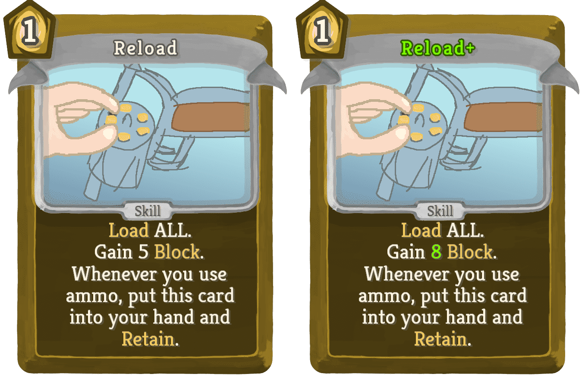 | Basic | Skill | 1 | bladegunner:Load ALL. Gain 5 (8) Block. Whenever you use ammo, put this card into your hand and Retain. |
| Revolver |  | Basic | Power | 1 | At the start of combat, if no gun is equipped, play this card. bladegunner:Equip bladegunner:Revolver (bladegunner:Revolver+). |
| Shoot |  | Basic | Attack | 1 | bladegunner:Shoot 1 time. (Deals 4 more damage.)bladegunner:Exchange. |
| Strike |  | Basic | Attack | 1 | Deal 6 (9) damage. |
| Golden Bullet |  | Special | Skill | 0 | This card is treated as Little Bullet. bladegunner:Load 1. Gain [E] [E] ([E]). Retain. Exhaust. |
| Jam |  | Special | Status | | Unplayable. When you bladegunner:Shoot, Exhaust this and bladegunner:Unload 1. Ethereal. |
| Little Bullet | 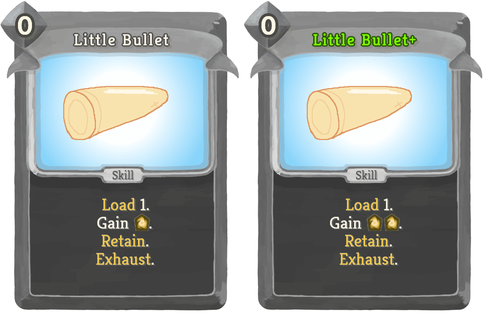 | Special | Skill | 0 | bladegunner:Load 1. Gain [E] ([E]). Retain. Exhaust. |
| Ammo Box | 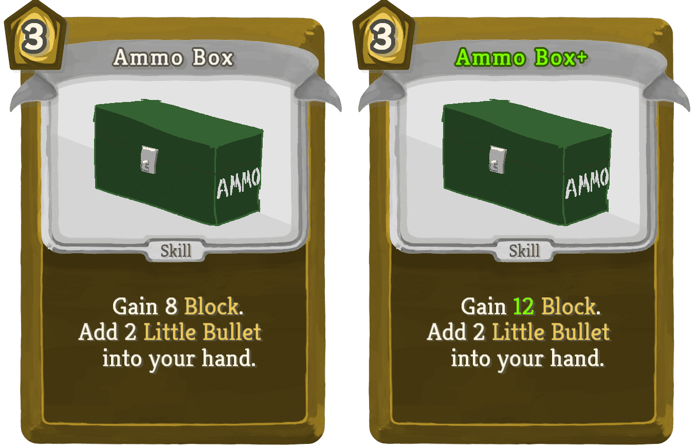 | Common | Skill | 3 | Gain 8 (12) Block. Add 2 Little Bullet into your hand. |
| Bandolier |  | Common | Skill | 1 (0) | Gain Block equal to magazine capacity plus 2. |
| Dual Shot |  | Common | Attack | 2 | If you have 2 ammo in the magazine, gain [E] [E]. bladegunner:Shoot 2 times.(Deal 150% damage.) |
| Emergency Reload |  | Common | Skill | 0 | bladegunner:Load ALL. Gain [E]. (Draw 1 card.)Add a Jam into your discard pile. |
| Grenade |  | Common | Attack | 2 | Deal 11 (15) damage. Deal 6 (8) damage to ALL enemies. |
| Gunsmoke |  | Common | Skill | 1 (0) | bladegunner:Unload 5. Apply bladegunner:Burning equal to amount of removed ammo. Target keeps bladegunner:Burning this turn. |
| Gunstock Strike |  | Common | Attack | 1 | Deal 6 (8) damage. Deal 3 (4) additional damage for each of equipped bladegunner:Guns. bladegunner:Exchange. |
| Headshot |  | Common | Attack | 1 | bladegunner:Shoot 1 time. Deal 130% (170%) damage. |
| Ignite | 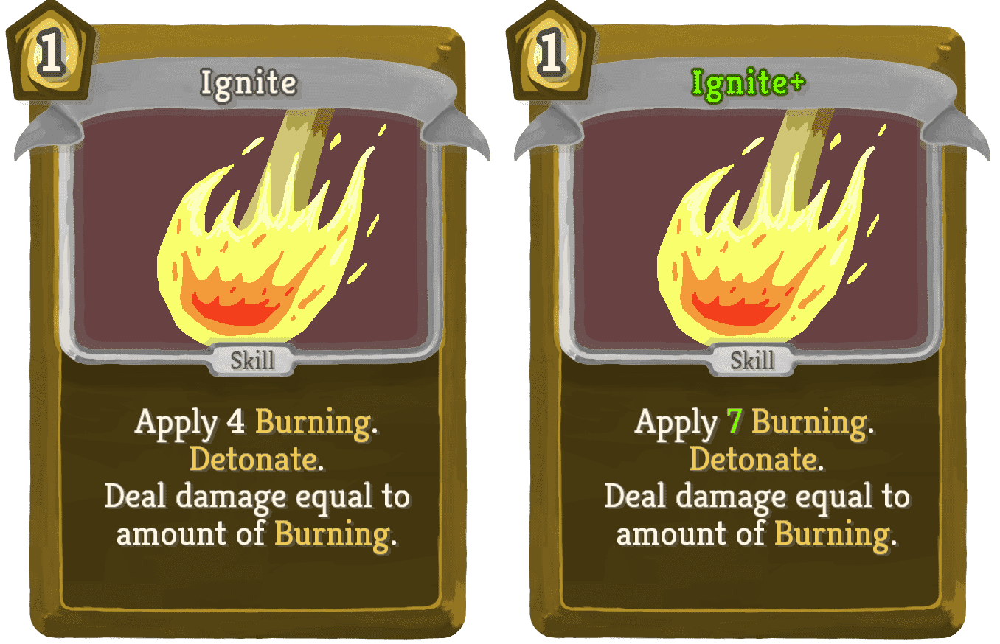 | Common | Skill | 1 | Apply 4 (7) bladegunner:Burning. bladegunner:Detonate. Deal damage equal to amount of bladegunner:Burning. |
| Low Ammo Anxiety |  | Common | Attack | 1 | Deal 8 (11) damage. If you have less than half of the ammo in magazine, deal 8 (11) damage again. |
| Preparing Stance | 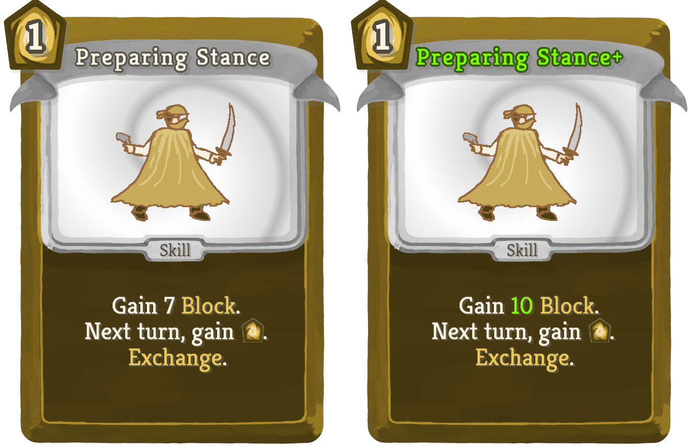 | Common | Skill | 1 | Gain 7 (10) Block. Next turn, gain [E]. bladegunner:Exchange. |
| Rash'oot |  | Common | Attack | 0 | bladegunner:Shoot 1 (2) time(s). Add a Jam into your draw pile. |
| Reloading Practice | 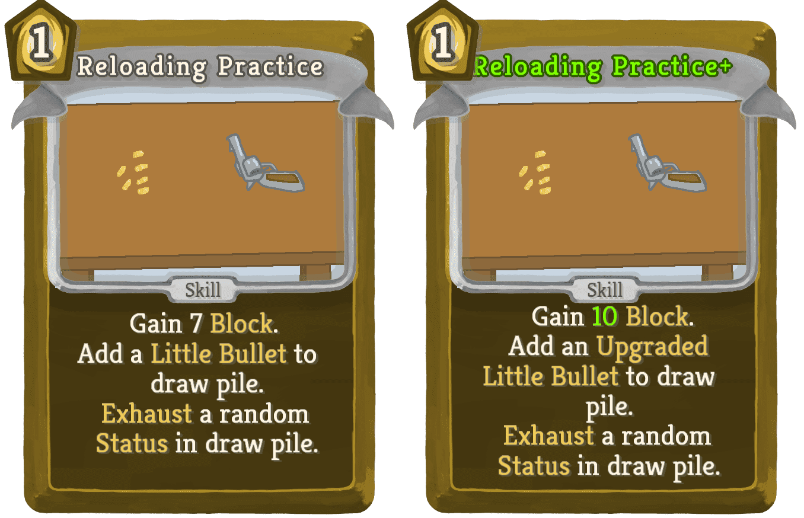 | Common | Skill | 1 | Gain 7 (10) Block. Add a (an Upgraded) Little Bullet to draw pile. Exhaust a random Status in draw pile. |
| Rolling Slash |  | Common | Attack | 1 | Deal 4 (7) damage. Gain 6 (9) Block. bladegunner:Exchange. |
| Russian Roulette |  | Common | Attack | 1 | Can only be played if you equip Revolver with 1 ammo. bladegunner:Exchange to it. bladegunner:Shoot a random enemy. Deal 40 (55) damage. |
| Smoke Bomb | 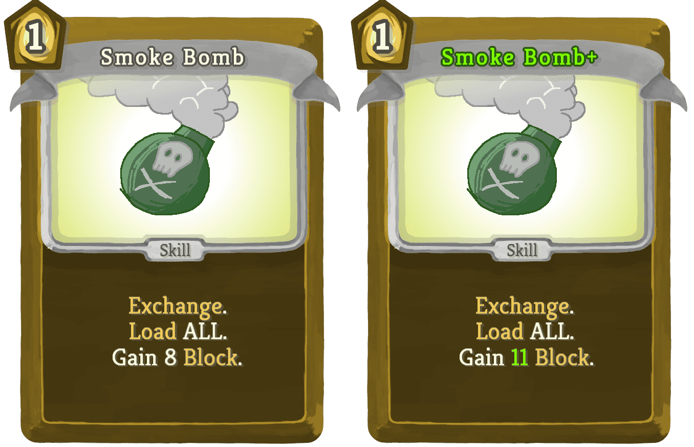 | Common | Skill | 1 | bladegunner:Exchange. bladegunner:Load ALL. Gain 8 (11) Block. |
| Spinning Slash |  | Common | Attack | 1 | Deal 5 (8) damage to ALL enemies. Draw cards equal to count of enemies (, at least !M! cards). |
| Sticky Bullets | 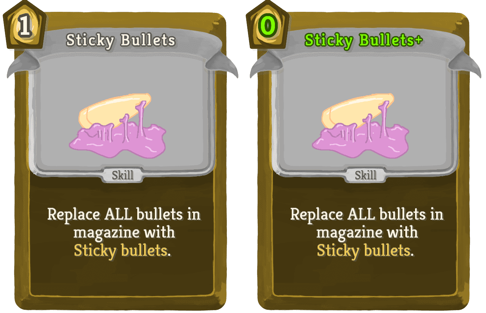 | Common | Skill | 1 (0) | Replace ALL bullets in magazine with bladegunner:Sticky_bullets. |
| Accurate Shoot |  | Uncommon | Attack | 2 | bladegunner:Shoot 2 times. Deals 1 (2) more damage for each bladegunner:Shooting_card you have played in this combat. |
| Aim Weakness |  | Uncommon | Attack | 1 | (bladegunner:Detonate.)bladegunner:Shoot 1 time. bladegunner:Detonate. (not bladegunner:Detonate.) Deals 2 more damage. |
| Airdrop |  | Uncommon | Power | 2 (1) | At the start of your turn, draw an additional card and reduce its cost by 1 in this turn. |
| Armory |  | Uncommon | Skill | 0 | Add a (Choose 1 of 2) random bladegunner:Gun_card(s) (to add) into your hand and reduce its cost by 1. Exhaust. |
| Backup |  | Uncommon | Skill | 1 | Choose a card in your hand. Add a copy (!M! copies) of that card into your hand. The copy is (copies are) Exhausted when played. |
| Ballistic Vest | 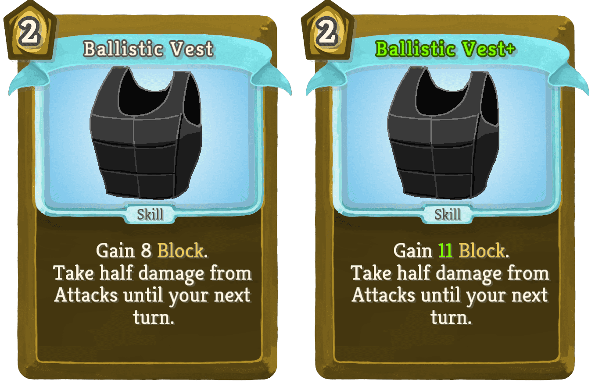 | Uncommon | Skill | 2 | Gain 8 (11) Block. Take half damage from Attacks until your next turn. |
| Barrage of Bullets | 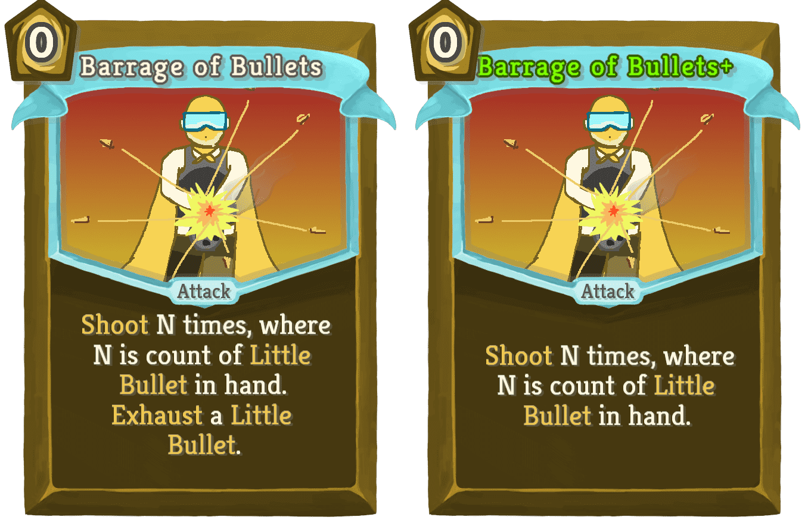 | Uncommon | Attack | 0 | bladegunner:Shoot N times, where N is count of Little Bullet in hand. Exhaust a Little Bullet. (not Exhaust a Little Bullet.) |
| Be Well-Armed |  | Uncommon | Skill | 1 | Gain 6 (8) Block. Gain 3 (4) additional Block for each of equipped bladegunner:Guns. bladegunner:Exchange. |
| Blade Gun |  | Uncommon | Power | 1 | bladegunner:Equip bladegunner:Blade_gun (bladegunner:Blade_gun+). |
| Bullets in Sand |  | Uncommon | Skill | X | Put 2 Little Bullet into your hand at the start of next X (X+1) turn. Exhaust. |
| Combat Memories |  | Uncommon | Skill | 0 | Put a (!M!) random bladegunner:Shooting_card(s) from discard pile into your hand. bladegunner:Exchange. |
| Crazy Shoot |  | Uncommon | Attack | 2 | bladegunner:Shoot 5 (9) times. Deal 60% damage. |
| Dagger in Bullets |  | Uncommon | Attack | 4 | Deal 18 (23) damage. Costs 1 less [E] each time you bladegunner:Load ALL. |
| Disassemble |  | Uncommon | Skill | 0 | You may Exhaust a bladegunner:Gun_card. Gain [E] equal to its cost plus 1. Draw 1 card. Exhaust. (not Exhaust.) |
| Eject |  | Uncommon | Skill | 0 | bladegunner:Exchange. Empty magazine. Add 2 (3) Little Bullet to hand. Exhaust. |
| Fire Blade | 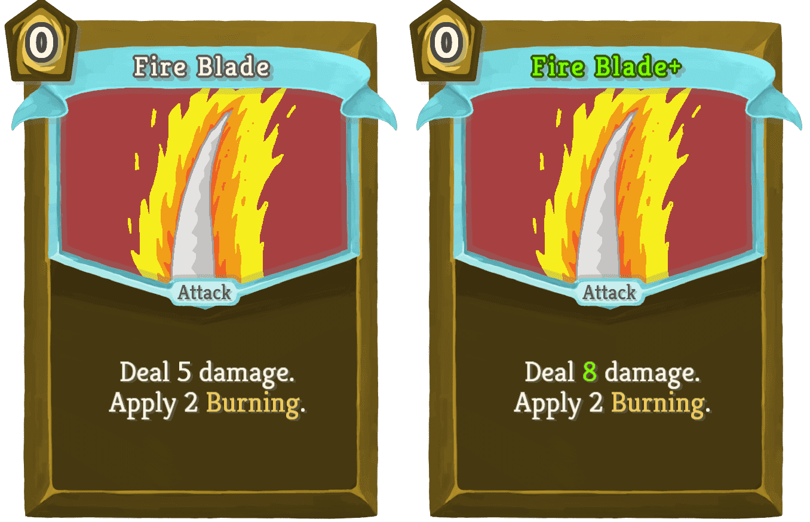 | Uncommon | Attack | 0 | Deal 5 (8) damage. Apply 2 bladegunner:Burning. |
| Flamethrower | 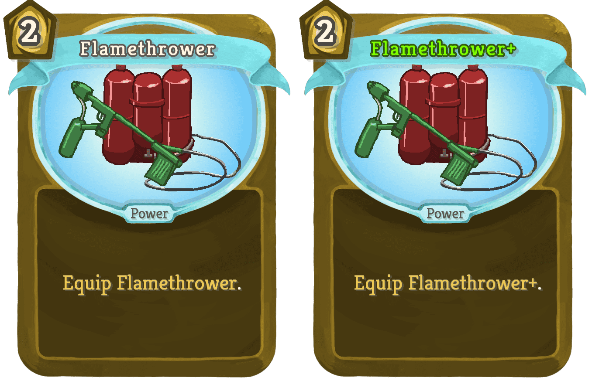 | Uncommon | Power | 2 | bladegunner:Equip bladegunner:Flamethrower (bladegunner:Flamethrower+). |
| Flashbang | 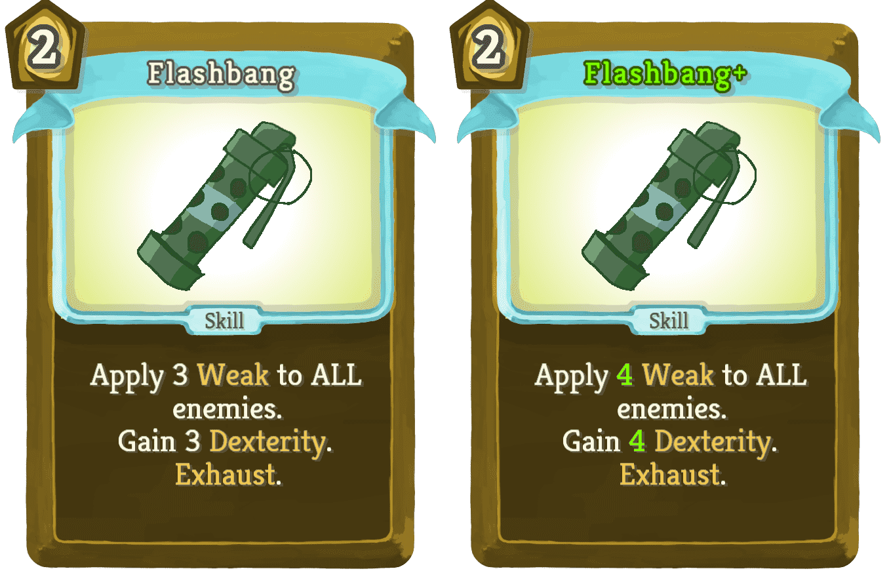 | Uncommon | Skill | 2 | Apply 3 (4) Weak to ALL enemies. Gain 3 (4) Dexterity. Exhaust. |
| Gun as Shield |  | Uncommon | Skill | 1 | Gain block equal to base damage of your current bladegunner:Gun (plus 4). Draw a card. |
| Gust |  | Uncommon | Power | 1 | At the end of turn, enemies keep 50% (75%) amount of bladegunner:Burning. |
| Increase Caliber |  | Uncommon | Skill | 1 | Gain 2 (3) Strength. Gain 1 additional Strength if magazine is not empty. Empty magazine. |
| Laser Pistol |  | Uncommon | Power | 2 | bladegunner:Equip bladegunner:Laser_pistol (bladegunner:Laser_pistol+). |
| Machine Gun |  | Uncommon | Power | 1 | bladegunner:Equip bladegunner:Machine_gun (bladegunner:Machine_gun+). |
| Mad Blade |  | Uncommon | Skill | 0 | Gain 2 (4) temporary Strength. This turn, each time you play a bladegunner:Non-shooting_Attack, keep 1 Strength. |
| Magazine Expansion |  | Uncommon | Power | 1 | (Innate.)Increase magazine capacity by 3. bladegunner:Load 3. |
| Master of Guns |  | Uncommon | Skill | 1 | Draw 2 (3) cards. Draw an additional card for each equipped bladegunner:Gun. |
| Offense to Defense |  | Uncommon | Skill | 1 | Gain 6 (9) Block. Gain additional 3 (5) Block for each Attack played in this turn. |
| Pierce |  | Uncommon | Attack | 1 | Deal 6 (9) damage. Apply 2 (3) Vulnerable. |
| Quick Draw |  | Uncommon | Attack | 1 | bladegunner:Shoot 5 times. Deal 30% (40%) damage. |
| Rocket Launcher |  | Uncommon | Power | 2 | bladegunner:Equip bladegunner:Rocket_launcher (bladegunner:Rocket_launcher+). |
| Shell Defense |  | Uncommon | Power | 1 | Whenever ammo is used or removed, gain 1 (2) Block. |
| Shooting Prepare |  | Uncommon | Skill | 1 | bladegunner:Load ALL. Draw 2 (3) card. |
| Shotgun |  | Uncommon | Power | 1 | bladegunner:Equip bladegunner:Shotgun (bladegunner:Shotgun+). |
| Sniper Rifle |  | Uncommon | Power | 2 (1) | bladegunner:Equip bladegunner:Sniper_rifle. |
| Special Vulnerary |  | Uncommon | Skill | 1 | Heal HP equal to 2 (3) multiply number of Little Bullet in hand. Exhaust. |
| Speed Shooting |  | Uncommon | Skill | 1 | bladegunner:Shooting_cards attack 2 (3) more times in this turn. |
| Spinning Shoot |  | Uncommon | Attack | 1 | bladegunner:Shoot ALL enemies 2 times. Deals 3 (1) less damage. Shuffle a Jam into your draw pile. |
| Tactical Retreat | 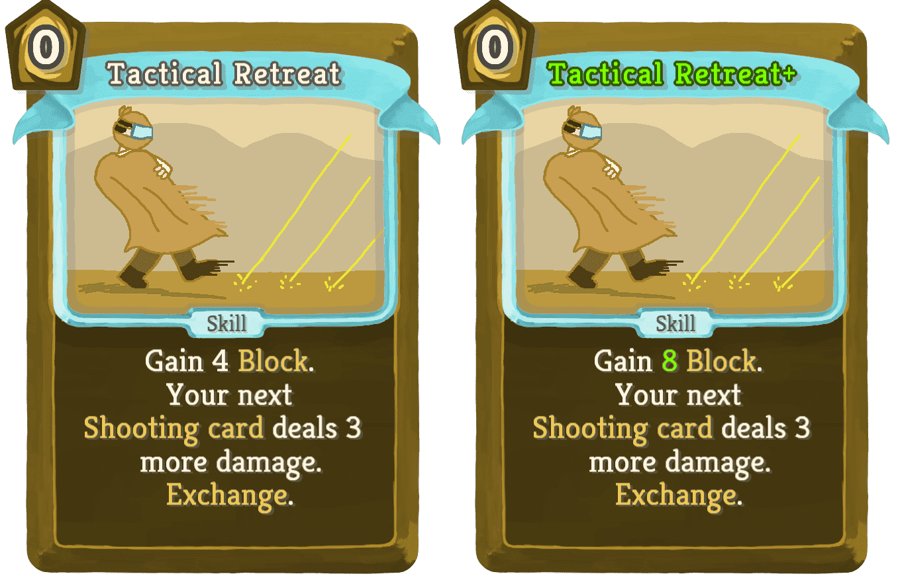 | Uncommon | Skill | 0 | Gain 4 (8) Block. Your next bladegunner:Shooting_card deals 3 more damage. bladegunner:Exchange. |
| Thrift |  | Uncommon | Power | 1 (0) | Whenever a Jam is Exhausted, put a Little Bullet into your hand. |
| Throw Sand | 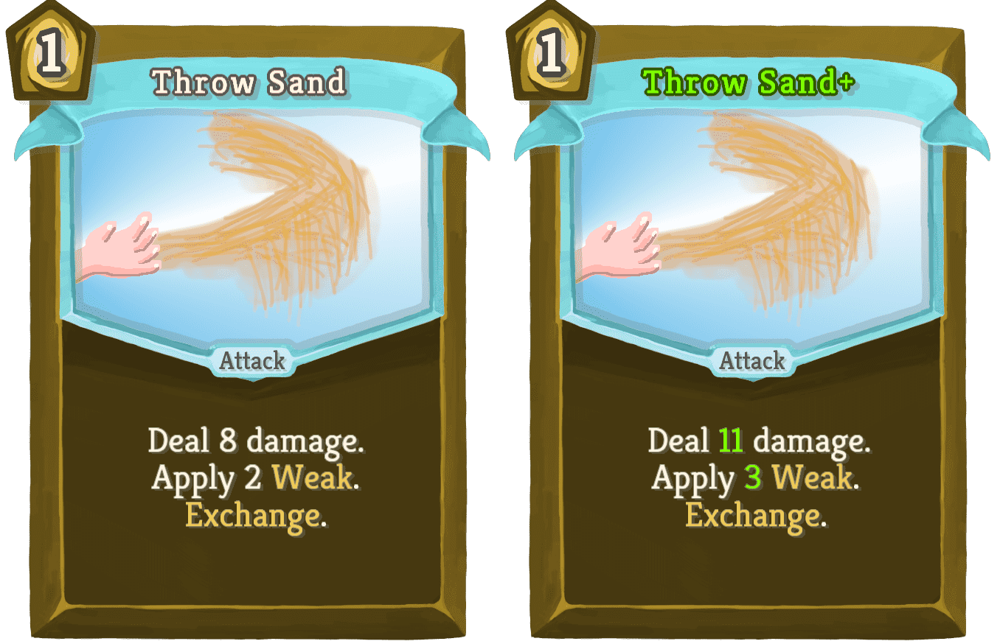 | Uncommon | Attack | 1 | Deal 8 (11) damage. Apply 2 (3) Weak. bladegunner:Exchange. |
| Burning Land |  | Rare | Attack | 2 | Deal 12 (18) damage to ALL enemies. Apply 5 bladegunner:Burning. Targets keep bladegunner:Burning this turn. |
| Camouflage |  | Rare | Skill | 2 | Gain 2 (3) Intangible. Cannot play Attacks whose damage are less than 22 for 2 (3) turns. Exhaust. |
| Combination Attack |  | Rare | Power | 1 | (Innate.)Whenever you play a bladegunner:Non-shooting_Attack, bladegunner:Shoot 1 time, which deals 50% damage. |
| Dimensional Shoot |  | Rare | Attack | 2 (1) | bladegunner:Shoot 1 time. If Fatal, permanently increase this card's Attack count by 1. Exhaust. |
| Drop Gun | 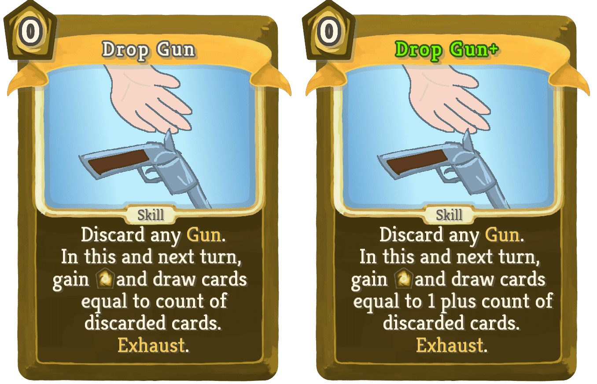 | Rare | Skill | 0 | Discard any bladegunner:Gun. In this and next turn, gain [E] and draw cards equal to (1 plus) count of discarded cards. Exhaust. |
| Exhausting Strike | 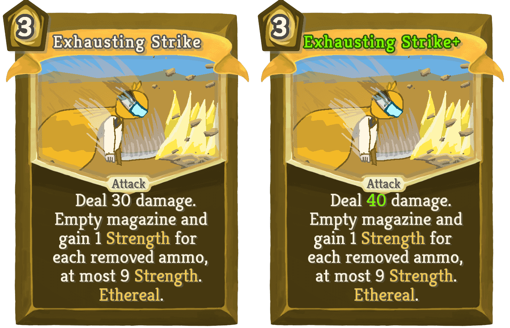 | Rare | Attack | 3 | Deal 30 (40) damage. Empty magazine and gain 1 Strength for each removed ammo, at most 9 Strength. Ethereal. |
| Hot Shells |  | Rare | Power | 2 | Deal 2 (3) damage to ALL enemies whenever ammo is used. |
| Infinite Ammo | 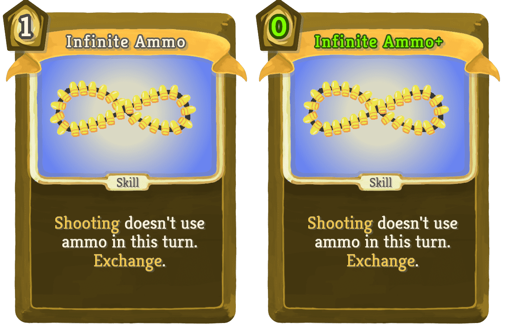 | Rare | Skill | 1 (0) | bladegunner:Shooting doesn't use ammo in this turn. bladegunner:Exchange. |
| Mad Gun |  | Rare | Attack | X | bladegunner:Shoot X times. (Deals 3 more damage.)bladegunner:Auto_reload. |
| Mecha Form |  | Rare | Power | 3 | Ethereal. (not Ethereal.) Effect of this card depends on current bladegunner:Gun. |
| Pursue |  | Rare | Power | 1 (0) | If you play bladegunner:Shooting_cards this turn, gain [E] next turn. |
| Ricochet |  | Rare | Skill | 1 (0) | Deals same amount of damage to random enemy each time you bladegunner:Shoot. Lose this effect at the end of the turn it's triggered. |
| Sandstorm |  | Rare | Attack | 2 | Deal 20 (26) damage to ALL enemies. Add 2 Jam into your hand and Retain them. |
| Supplement | 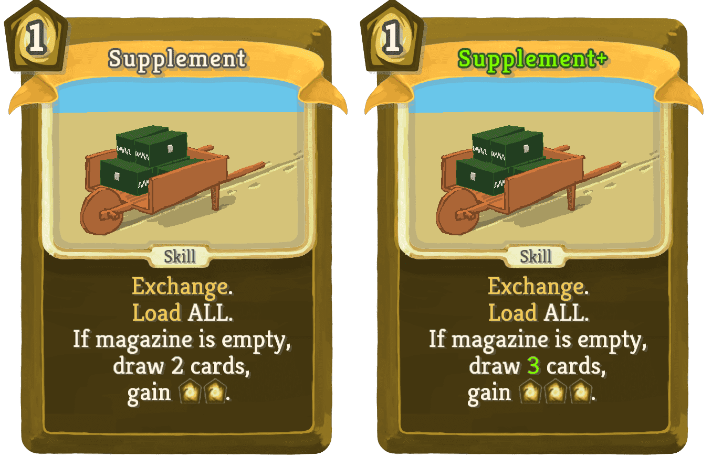 | Rare | Skill | 1 | bladegunner:Exchange. bladegunner:Load ALL. If magazine is empty, draw 2 (3) cards, gain [E] [E] ([E]). |
| Name | Image | Tier | Pool | Description | Flavor |
|---|
| Old Revolver |  | Starter | Blade_gunner_color | The first time you play a bladegunner:Shooting_card each combat, add LittleBullet into your hand. | An old but good revolver. |
| Lucky Bullet |  | Common | Blade_gunner_color | Whenever you use 6 ammo, add LittleBullet into your hand. This effect can only be triggered once per turn. | An old bullet from battlefield. |
| Empty Cylinder | 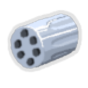 | Uncommon | Blade_gunner_color | If magazine capacity is greater than 1, double damage from the last ammo in magazine. | Made with steel. |
| Gun Oil |  | Uncommon | Blade_gunner_color | Jam is playable. When it's played, Exhaust it and draw 1 card. | A gun that is not carefully maintained is dangerous. |
| Bayonet | 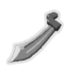 | Rare | Blade_gunner_color | When you play a bladegunner:Non-shooting_Attack, your next bladegunner:Shooting_card deals 2 more damage. | It's blade, and part of a gun. |
| Manual of Guns | 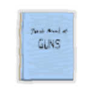 | Rare | Blade_gunner_color | Keep equipped gun between combats. | How to use this? |
| Sweet Rain | 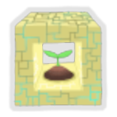 | Special | Blade_gunner_color | It seems that you are looking for it. You should take this and leave the spire. | It has magical power of summoning thunder and rain. |
| Golden Revolver |  | Boss | Blade_gunner_color | Replaces OldRevolver. The first time you play a bladegunner:Shooting_card each combat, add GoldenBullet into your hand. At the end of combat, gain 12Gold if GoldenBullet is in your hand. | One of the best guns in my collection. |
| Runic Holster | 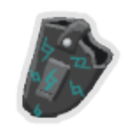 | Boss | Blade_gunner_color | Gain [E] at the start of your turn. When you bladegunner:Equip a gun, its magazine is empty. | This make me feel I can draw my gun even faster. |
| Tiny Oasis | | Boss | Blade_gunner_color | At the start of every 3 turns, choose a Skill card from draw pile and put it into your hand. | Light of life in desert. |
| Rifling Barrel | 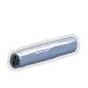 | Shop | Blade_gunner_color | At the start of first 3 turns, gain effect randomly from one of InfiniteAmmo,Ricochet and SpeedShooting. | Just simple modification on barrel... |
| Name | Description |
|---|
| Auto Reload | If magazine is empty during shooting, reduce Attack count by 1, then fill magazine up with ammo. Attack count limitation of Sniperrifle doesn't take effect. |
| Blade Gun | Base damage: 8.Shootingcards are treated as Non-shootingAttacks. They deals damage equal to base damage of this gun multiply Attack count. |
| Blade Gun+ | Base damage: 12.Shootingcards are treated as Non-shootingAttacks. They deals damage equal to base damage of this gun multiply Attack count. |
| Gun Card | Gun cards are Power cards that contains Equip in description. |
| Laser Pistol | Magazine capacity: 7. Base damage: 3. Increase base damage by 1 for each ammo in magazine. |
| Laser Pistol+ | Magazine capacity: 7. Base damage: 5. Increase base damage by 3 for every 2 ammo in magazine. |
| Machine Gun | Magazine capacity: 12. Base damage: 5. Double attack count of Shootingcards. Gain double capacity from Magazineexpansion. Gain double attack count from Speedshooting. Half effect of Strength on Shootingcards. |
| Machine Gun+ | Magazine capacity: 12. Base damage: 5. Triple attack count of Shootingcards. Gain triple capacity from Magazineexpansion. Gain triple attack count from Speedshooting. Half effect of Strength on Shootingcards. |
| Non-shooting Attack | Non-shooting Attack are Attack cards that doesn't contains Shoot in description. They don't use ammo and aren't affected by Jam. |
| Rocket Launcher | Magazine capacity: 1. Base damage: 18.Shoot ALL enemies. Magazineexpansion doesn't take effect. Double effect of Strength on Shootingcards. |
| Rocket Launcher+ | Magazine capacity: 1. Base damage: 23.Shoot ALL enemies. Magazineexpansion doesn't take effect. Double effect of Strength on Shootingcards. |
| Shooting Card | Shooting cards are Attack cards that contains Shoot in description. |
| Sniper Rifle | Magazine capacity: 4. Base damage: 25.Shootingcards can only attack 1 time. Double effect of Strength on Shootingcards. |
| Sticky Bullet | At the end of enemies' turn, deal 3 additional damage and apply half amount of Burning. |
| bladegunner:burn | Take additional damage from Attacks until end of turn, in which damage value is equal to stack amount. |
| bladegunner:detonate | Trigger effect of Stickybullets on target. Deal damage and apply same amount of Burning instead. |
| bladegunner:equip | Change equipped gun. |
| bladegunner:exchange | You may swap equipped gun with one of previously equipped guns. |
| bladegunner:flamethrower | Magazine capacity: 15. Base damage: 3. Apply 1Burning per shot. |
| bladegunner:flamethrower+ | Magazine capacity: 15. Base damage: 6. Apply 1Burning per shot. |
| bladegunner:load | Fill magazine with ammo. |
| bladegunner:revolver | Magazine capacity: 6. Base damage: 8. |
| bladegunner:revolver+ | Magazine capacity: 6. Base damage: 10. |
| bladegunner:shoot | Use 1 ammo per shot. Damage value depends on equipped gun. You can't shoot if magazine is empty. |
| bladegunner:shotgun | Magazine capacity: 2. Base damage: 10.Shoot ALL enemies. |
| bladegunner:shotgun+ | Magazine capacity: 2. Base damage: 13.Shoot ALL enemies. |
| bladegunner:unload | Remove ammo from magazine. |
{kind=link}
{kind=link}
{kind=link}
{kind=link}
{kind=link}
{kind=link}
{kind=link}
{kind=link}
{kind=link}
{kind=link}
{kind=link}
{kind=link}
{kind=link}
{kind=link}
{kind=link}
{kind=link}
{kind=link}
{kind=link}


{kind=link}